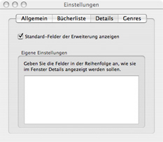
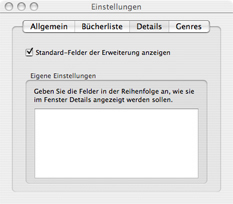

Details Preferences
By default, Books selects which fields are visible in details display. You may use the
default fields specified by the display plugin, or you may choose your own.

Adjusting Fields
Under construction.
By default, Books selects which fields are visible in details display. You may use the
default fields specified by the display plugin, or you may choose your own.

Under construction.